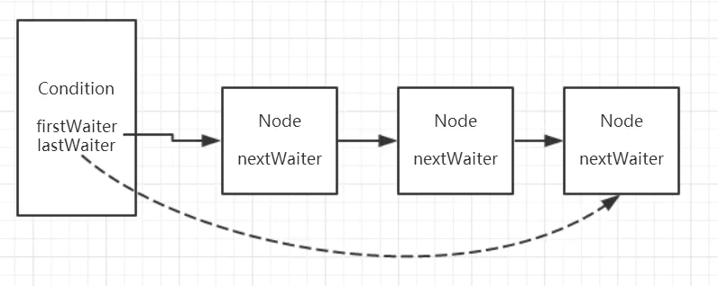
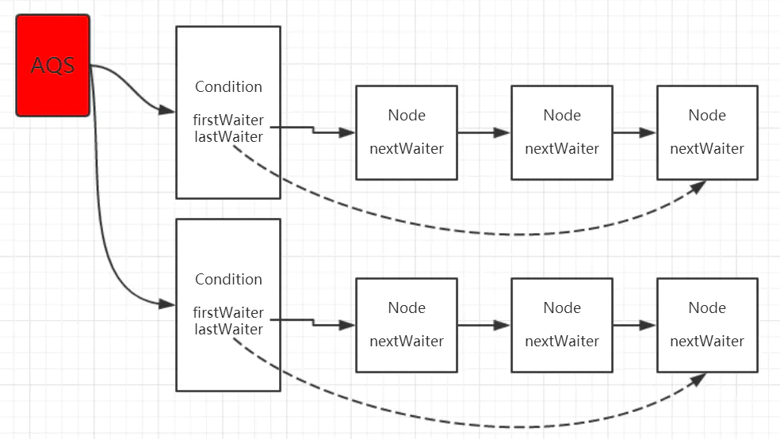
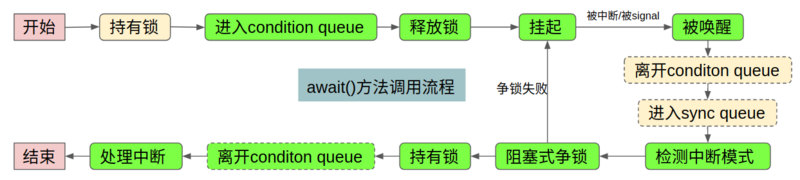

一、Condition是什么？有什么用？
Tip: 本文源码基于JDK8
我们知道 wait()、notify()是和synchronized关键字配合使用的。如果使用了显示锁Lock，就不能用了，所以Condition应运而生。
Condition是一个接口，主要功能就是提供了与 wait()、notify()一样的等待/唤醒功能。
全部接口如下：
- await()
线程在调用condition.await()后处于await状态，此时调用thread.interrupt()会报错 - awaitUninterruptibly()
但是使用condition.awaitUninterruptibly()后，调用thread.interrupt()则不会报错 - awaitNanos(long nanosTimeout)
等待到nanosTimeout纳秒 - await(long time, TimeUnit unit)
等待到单位时间 - awaitUntil(Date deadline)
等待到特定日期 - signal()
唤醒一个等待在condition上的线程 - signalAll()
醒所有等待在condition上的线程
Condition是在JDK1.5中才出现的，它用来替代传统的Object的wait()、notify()实现线程间的协作，相比使用Object的wait()、notify()，使用Condition的await()、signal()这种方式实现线程间协作更加安全和高效。而它的她的实现类就是AQS的ConditionObject。
二、源码分析
调用Condition的await()和signal()方法，都必须在lock保护之内，就是说必须在lock.lock()和lock.unlock之间才可以使用。
AQS内部维护了一个同步队列，如果是独占式锁的话，所有获取锁失败的线程的尾插入到同步队列，同样的，condition内部也是使用同样的方式，内部维护了一个 等待队列，所有调用condition.await方法的线程会加入到等待队列中，并且线程状态转换为等待状态。另外注意到ConditionObject中有两个成员变量：
/** First node of condition queue. */ |
这两个就是条件等待队列的头尾节点，和同步等待队列不同的是，条件等他队列是单向链表。Node类有这样一个属性：
//后继节点 |
还有一个重要的变量 waitStatus 与它的取值范围。
volatile int waitStatus; |
在条件队列中，我们只需要关注一个值即可——CONDITION。它表示线程处于正常的等待状态。
而只要waitStatus不是CONDITION，我们就认为线程不再等待了，此时就要从条件队列中移到同步等待队列。
来看看条件等待队列的示例图，如下


Condition接口的实现类是AQS的内部类ConditionObject。和之前一样通过Demo一行行分析。Demo如下：
public class ConditionTest { |
先无视代码的质量与性能什么的。
await() 上
lock调用lock()方法上次分析过了，来看看await方法做了什么操作。
public final void await() throws InterruptedException { |
addConditionWaiter()
上面的代码注释基本把大体流程分析了一下。来看看具体到行的代码，addConditionWaiter:
private Node addConditionWaiter() { |
上面代码都有注释了，我这里就不重复说了，之前在同步等待队列的添加节点中用到了CAS，这里没有用到是因为这里不存在并发问题。
因为能调用await方法的线程必然是已经获得了锁，来看看unlinkCancelledWaiters()清除cancel节点的方法：
private void unlinkCancelledWaiters() { |
这就是从头遍历，剔除不等于CONDITION状态的节点，也就是CANCELLED节点了，代码都不算难理解。
fullyRelease(node)
既然已经把当前线程封装成Node添加到了条件等待队列了，那就要把当前线程的锁释放出去。这里是一次性释放所有锁（对于可重入锁而言）。
final int fullyRelease(Node node) { |
最终调的是 release()方法.而release上次讲过，这次不粘贴代码了。
这里需要注意的是：可能会发生IllegalMonitorStateException 异常，当然了如果正确使用的话是不会抛异常的。
而抛这个异常的原因是：当前线程可能并不是持有锁的线程，为什么这么说，因为调用await方法时，我们其实并没有检测Thread.currentThread() == getExclusiveOwnerThread()
就比如这个demo代码，如果你的await()方法在lock()方法之前调用，那就会报这个异常。如果报错,finally 的if语句就成立。就会把waitStatus=CANCELLED。
所以addConditionWaiter()才会有去检测尾节点是否有效。
signal()
在上面释放锁之后，来到while循环，判断isOnSyncQueue(node) 是否在同步队列中。
final boolean isOnSyncQueue(Node node) { |
一直在讲条件等待队列，为什么就判断是否存在在同步等待队列中了呢？不要慌，慢慢分析。在while条件中，第一次isOnSyncQueue(node)肯定返回false,那!isOnSyncQueue(node)=true
进入while 循环，调用LockSupport.park(this) 把当前线程挂起，代码执行到此就阻塞起来了。等待signal/signalAll 唤醒或中断。
阻塞后面的代码后面分析，接下来分析signal方法。
public final void signal() { |
signal()方法 最终调用的是doSignal(first)方法：
private void doSignal(Node first) { |
唤醒第一个条件等待队列的节点（出队），上面的主要方法就是transferForSignal(first) 从条件等待队列转移到同步等待队列。因为两个队列都是Node对象，只不过涉及的属性不太相同而已。
如果返回的是false，说明要转移的节点是取消的状态，所以需要继续遍历。来看看源码：
final boolean transferForSignal(Node node) { |
transferForSignal()方法从条件等待队列移到同步队列，如果返回true,说明正常等待同步队列唤醒。如果前驱节点取消了那就直接唤醒当前线程
await()下
前面我们已经分析了signal方法，它会将节点添加进sync queue队列中，并要么立即唤醒线程，要么等待前驱节点释放锁后将自己唤醒。
无论怎样，被唤醒的线程要从哪里恢复执行呢？当然是被挂起的地方呀，还记得while 循环里的LockSupport.park(this) 吧，来回忆下：
public final void await() throws InterruptedException { |
park 方法之后是checkInterruptWhileWaiting() 判断后续的处理应该是抛出 InterruptedException 还是重新中断，来看看代码：
private int checkInterruptWhileWaiting(Node node) { |
这代码还真短小精悍，interrupted()方法上篇讲过，其作用返回Boolean(当前线程是否被中断)并清除中断状态。
如果interrupted()返回false,那就是没有中断，直接返回0，然后再次判断isOnSyncQueue()不出意外那肯定是返回true,!取反，那就结束while循环。
这里假设是发生了中断，那就走transferAfterCancelledWait() 方法，进一步判断是否发生了signal。
final boolean transferAfterCancelledWait(Node node) { |
如果transferAfterCancelledWait()方法执行了，说明线程被中断了，因为只有Thread.interrupted()返回true的时候才会调用。
而中断不一定成功，可能在中断的时候刚好signal 了，而且抢在中断的时候把节点移到了同步队列，那中断就来得比较慢了。重新赋值给interruptMode。
- 0: 代表整个过程中一直没有中断发生
- THROW_IE(-1): 表示退出await()方法时需要抛出InterruptedException，这种模式对应于中断发生在signal之前
- REINTERRUPT: 表示退出await()方法时只需要再自我中断一下，这种模式对应于中断发生在signal之后，即中断来的太晚了。
最终代码执行到acquireQueued()方法，这个方法熟悉吧，上篇讲过，来看下代码，之前讲过这回不注释了
acquireQueued
final boolean acquireQueued(final Node node, int arg) { |
- acquireQueued() 抢锁设置为同步队列头节点，判断
nextWaiter是否不为null,清理掉相关的CANCELLED状态 - 如果interruptMode 不等于0,说明是被中断了，但是中断是否成功需要看
interruptMode最终是什么。执行reportInterruptAfterWait方法
reportInterruptAfterWait
private void reportInterruptAfterWait(int interruptMode) |
代码很简单，如果transferAfterCancelledWait()返回true,那么interruptMode==THROW_IE 抛出中断异常。
如果等于REINTERRUPT 则，调用selfInterrupt()重新标识中断状态（上面分析过）。
三、总结
condition用法的整体流程：
- 调用await()方法的时候必须是持有锁
- 把线程封装成Node加入到条件等待队列
- 释放所有锁并阻塞，等待signal
- signal唤醒，把Node从条件等待队列出队移到同步等待队列
- 判断是否是中断，然后阻塞式抢锁
- 从同步队列出队，报告中断信息
- 结束await()

当然还有 await与signal相同功能方法还没讲，比如：
void awaitUninterruptibly(); |
代码逻辑大体都差不多，上面看得懂，基本上都可自行分析。至此关于Condition 源码基本分析完了。